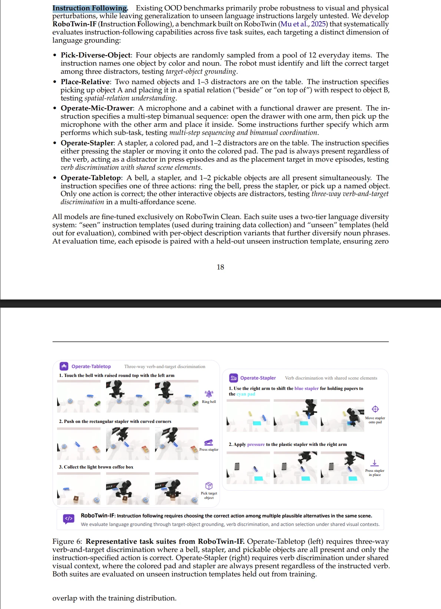
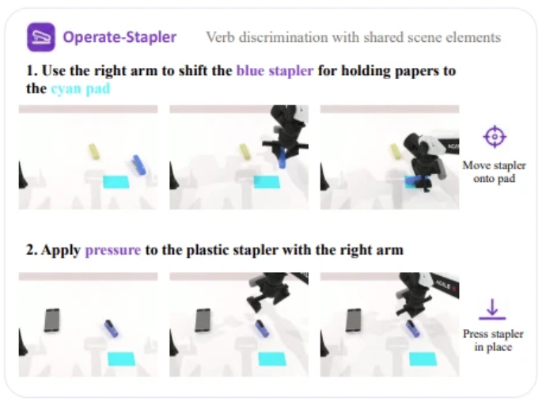
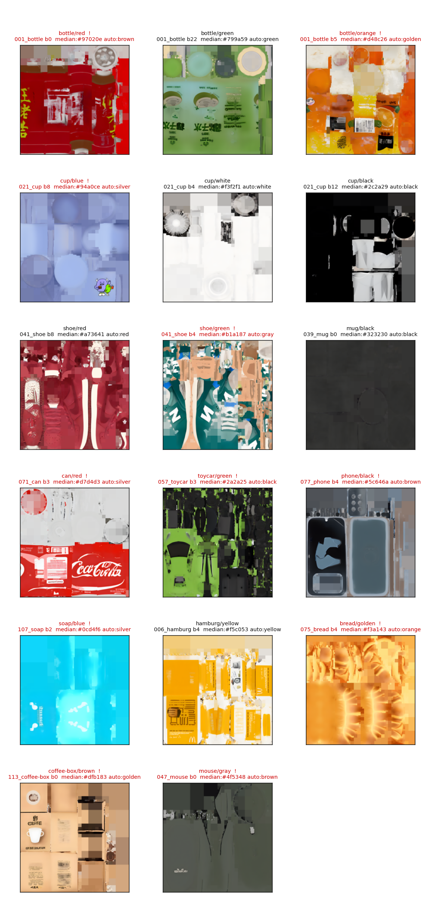
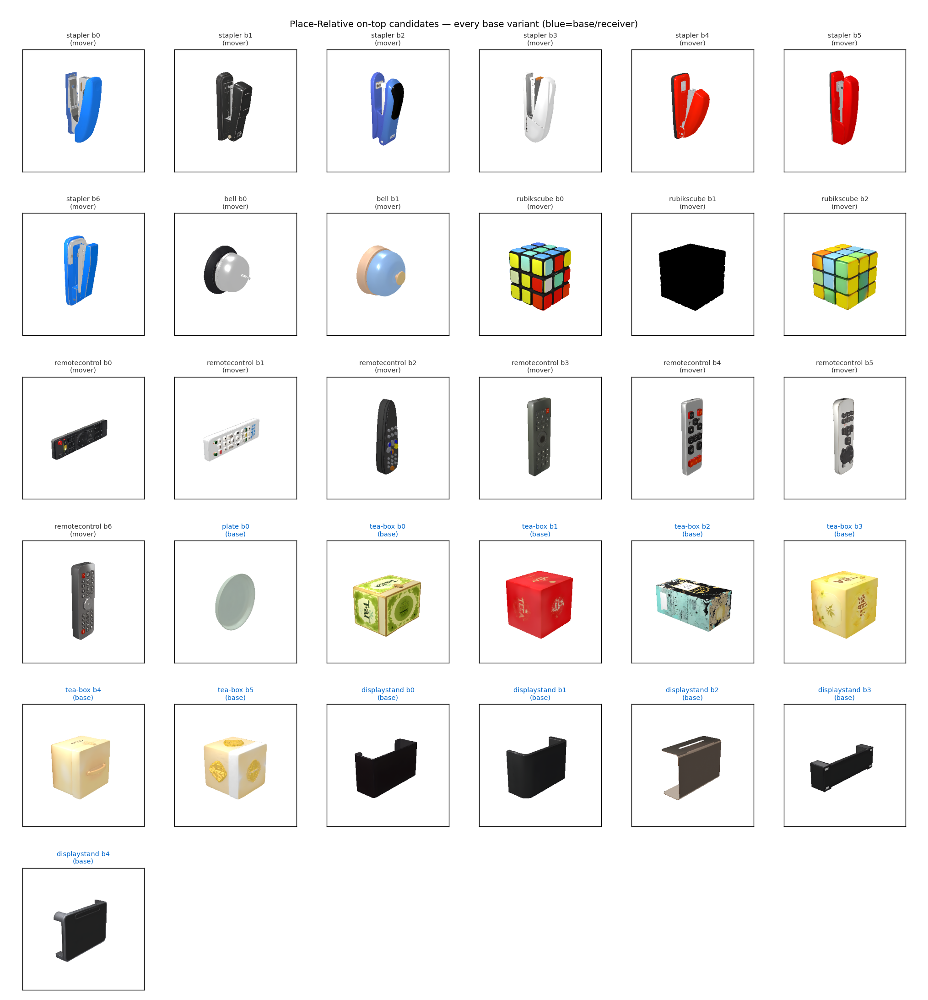

复刻论文 §6.2.1 的 5 个 Instruction-Following 任务集：本周做完 4 个、搁置 1 个，另打好一套「零改上游源码」的桥接基建。4 个完成任务均达到 Layer A（结构）+ Layer B（判定正反例）+ collect_data oracle 冒烟 成熟度。下周主线已定：进 eval/policy 阶段做 Layer C 区分度验证。

Instruction Following（IF）能力测试——policy 是不是真按语言指令选动作，而不是退化成「看图做默认动作」（论文称 VLA→VA degradation）——是目前流行 VLA benchmark 普遍不具备的维度。论文提出了这套针对性任务集，但没开源代码。
本周产出：5 个任务集完成 4 个（右下四张卡）+ 一套零改上游源码的桥接基建。均达 Layer A（结构）+ Layer B（判定正反例）+ oracle 冒烟 成熟度：
同一订书机场景，指令动词决定「按」还是「搬到垫子」——垫子角色随之翻转（干扰/目标）。
恒定桌面（铃铛+订书机+物体），三选一：触铃 / 按订书机 / 拿点名物体。画面静止时三模式完全一致。
12 品类池采 4 个，指令「颜色+名词」点名 1 个目标拿起，其余 3 个干扰。
拿起 A 放到 B 的 beside / on-top。同物体池两关系完全一样，场景不泄露关系。
eval_policy.sh 端到端、合并评测接入、论文数值对齐——见文末「下周计划」。第 5 个 Mic-Drawer 因资产几何不兼容搁置（详见 §⑥）。| # | 任务集 | 论文维度 | 状态 | oracle | commit |
|---|---|---|---|---|---|
| 基建 | Task Bridging smoke click_bell | —（基础设施） | 完成 08-19 | 3/3 | symlink |
| feat-02 | Operate-Stapler | 共享场景动词判别 | 完成 08-20 | press 100% / move 88% | 50c756b |
| feat-03 | Operate-Tabletop | 三选一动词+目标 | 完成 08-21 | 97.8% | 319bba0 |
| feat-04 | Pick-Diverse-Object | 目标物体 grounding | 完成 08-24 | ~82.8% | 717dbde |
| feat-05 | Place-Relative | 空间关系理解 | 完成 08-24 | 92.6% | c547421 |
| feat-06 | Operate-Mic-Drawer | 多步双臂协调 | 搁置 08-25 | ~10–30%（天花板） | env 已写好 |
搞清楚 RoboTwin 完全靠 task_name 字符串去固定目录按约定名字找文件，从不 import 我们的仓库。于是用 ln -srf 相对软链把 tasks/ 下文件注入 submodule 对应目录，零改上游源码。关键发现：注入点不是 1 处而是 3 处（env 类 / 指令 json / 物体描述），评测侧走同一套 importlib 发现机制 → 合并评测方案天然成立。这套机制之后每个任务都直接吃。
robotwin-if/tasks/、靠 bridge_tasks.sh 接入，submodule 一字未改。50c756b论文维度：共享场景下的动词判别——同一画面，指令动词决定做哪件事。
| 原生任务 | 原本是什么 | 贡献给我们 |
|---|---|---|
press_stapler | 单臂在原地按下订书机 | press 专家动作 + press 指令池 |
move_stapler_pad | 把订书机搬到彩色垫上 | move 专家动作 + move 指令池 + 场景采样分布 |
做的事：把两个原生任务合并进同一场景（订书机+彩色垫+干扰物），用指令里的动词决定做哪件事。垫子在两种指令下角色翻转：press 时是干扰项，move 时是目标。
核心机制：self.mode = seed%2 一处采样、三处读取（建场景/专家/判定）。最重要的结构认知——指令是 mode 的下游投影，不能反推；mode 当唯一枢纽，instruction 和 check 都是它的兄弟投影。这个模型被后 3 个任务复用。

踩坑：self.info 初始化顺序、071_can model_id 不连续、干扰物 glb qpos 只对 stable 物体成立（markpen 无 stable 姿态 → 用 093_brush-pen 顶替）。
319bba0论文维度：恒定桌面上的三选一动词+目标判别。
| 原生任务 | 原本是什么 | 贡献给我们 |
|---|---|---|
click_bell | 触碰铃铛顶部中心 | click 分支 + 指令池（占位符 {A}） |
press_stapler | 按下订书机 | press 分支 + 指令池（{A}→{B} remap） |
adjust_bottle | 单臂纯拿起（RoboTwin 里唯一单臂 pick） | pick 分支 grasp+lift + 指令池（{A}→{C}） |
做的事：把三个原生任务合并进同一恒定桌面场景（铃铛+订书机+可拿物体），做三选一：click / press / pick。画面静止时三模式完全一致，只有指令变。seed%3 + 三个互斥占位符 {A}/{B}/{C} 三向路由，是 Stapler「{B} 有无二分」的自然推广。
717dbde论文维度：「颜色+名词」的目标物体 grounding（原生无直接对应，属新建型）。
| 原生任务 | 原本是什么 | 贡献给我们 |
|---|---|---|
adjust_bottle | 单臂拿起一个瓶子 | 抓取+抬起机制 + orientation-free 指令模板子集（12/4） |
pick_dual_bottles | 双臂各拿一个瓶子 | 瓶子竖立的 resting qpos [0.66,0.66,-0.25,-0.25] |
做的事：从"只丢一种瓶子"扩成 12 品类池采 4 个，指令用「颜色+名词」点名 1 个目标（"the blue cup"）单臂拿起，其余 3 个干扰。12 品类等概率目标（seed%12 轮转），颜色贴图眼验锁定 16 变体，逐物体配抓取参数 + 世界系抬起。

还踩了 option A→B（强制混淆项把物体分布压偏）、seed 聚簇（低连续 seed 下 red-shoe 概率异常高，改 seed%N 轮转）、逐物体 resting qpos（phone 通用 qpos 17 次全败 → 换专属 5/5）。
c547421论文维度：空间关系理解（beside vs on-top，原生无直接对应，属新建型）。
| 原生任务 | 原本是什么 | 借了什么（注意只借局部） |
|---|---|---|
move_can_pot | 把罐子移到锅旁（非方向性 next to/beside/near） | beside 指令池 + 占位符 {B} |
stack_blocks_two | 双臂把两块都搬到中心堆叠 | 只借 on-top 词汇（on top of/atop/onto）；结构不借（它双臂两块，我们单臂 A→B） |
place_object_stand | 把多样物体放到台面上 | mover 物体池（mouse/stapler/bell/…）+ pre_grasp_dis=0.1 放置机制 |
（此任务 raw 片段散在三个原生任务、且多为局部借用，故上表说明比单看视频更清楚；需要的话可另跑原生任务补录 raw 视频。）
做的事：拿起 A、放到 B 的 beside（旁边）或 on top of（上面）。同一套物体池两种关系完全一样，场景不泄露是哪种关系 → policy 只能靠指令关系词判断。beside/on-top 靠占位符签名路由（{B}/{C}），无需写死关系词、保留原生措辞多样性。

本周唯一没跑通的，但调研本身是高质量的：11 轮 headless 探针，逐字段量状态，隔离出两道相互独立的几何墙。判定为资产不兼容（018_microphone+036_cabinet），非实现失败——env / 指令 JSON / 严格判定器都写好且跑得起来。
| 墙 | 现象 | 铁证 |
|---|---|---|
| 墙 1 强 arm 轴不可行 | 中央麦克风 → 两臂争中央 | 只开抽屉单臂 ✓；先抓麦克风 → 开抽屉臂规划不到把手（规划器做不了共享中央体积双臂作业） |
| 墙 2 放进抽屉 oracle 极低 | 抽屉垂直净空 < 麦克风+夹爪 | 显式航点把麦克风精确对到抽屉正上方 xy≈0.001，仍下不去（卡在上方 0.13, plan=False） |
缩麦克风（最好 3/10）、放大柜子（8/8 抽屉根本没开）、改放置策略全试过顶不住。无视频（探针全 headless），证据是逐字段状态数据。复现脚本已归档：evidence/06-mic-drawer/probe_oracle_check.py。
default_rng(seed).integers 对 seed 0/1/2… 聚簇）——Pick-Diverse、Place-Relative 都踩到，统一改 seed%N 轮转或混合种子流。要证明的核心命题：4 个任务真能区分「读指令的 policy」vs「看图做默认动作的 policy」——否则 benchmark 名不副实。
| # | 步骤 | 产出 / 卡点 |
|---|---|---|
| 1 | 先立 baseline 对照，不急着接真实 VLA | 作弊 oracle（上界 82–98%，已有）vs 瞎猜 dummy（下界应接近 chance：Pick≈1/12、Tabletop≈1/3、Place≈1/2、Stapler≈1/2）。区分度=上界−下界够大才算有效。不需训练，最先能跑出来。 |
| 2 | 打通 eval_policy.sh 端到端 | 目前只验过 collect_data。顺带验证 mode 决定性在真实 eval 双 setup 里成立（seed%N 逻辑保证，但未端到端验过）。 |
| 3 | 合并评测接入 all_tasks_plus_if.yml | 4 个任务一次性过评测调度。 |
| 4 | 与论文 Table 8 对齐 | 看数值量级是否同一级别（不追逐值还原，论文未开源）。 |
eval/policy 是下周主攻；我们自己的扩展方向（新增环境维度、设计新任务、逐任务打磨）作为并行路线图，见下方 路线图。
§总 里说的「基于此按我们需求打磨修改」，具体拆成下面几条轨。轨 D 是下周主攻，轨 B/C 是本项目自定的扩展方向（规划先行、含实现），轨 A 背景非阻塞。
eval_policy.sh 端到端跑通 + mode 决定性真实 eval 验证all_tasks_plus_if.yml；与论文 Table 8 数值量级对齐维度：table height（不同桌高）、arm 出发 qpos（不同初始位形），可扩 base 位置 / 相机视角。动机：测 policy 对场景几何与初始位形的鲁棒性，验 IF 能力是否跨条件成立——单一固定桌高/位形下的高分不代表真会读指令。
check_success 里一堆绝对 z 阈值（桌面 0.741、lift 0.02、beside 距离带、on-top rise）都假设固定桌高，变高度会直接全崩→ 改成相对桌面表面的量。can 抓放最弱（75%）、base 池只有 2 个盒 reference 偏弱